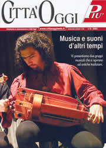

)
)
) |
Come mai ci chiamiamo Babele?
E' semplice: tutto è nato da scherzosi equivoci che avevamo nell'intenderci e così ci è venuta subito in mente la famosa torre quando dovemmo decidere un nome comune per la nostra formazione musicale.
Come mai facciamo questo genere musicale?
Tutto è nato dalla passione, che ciascuno aveva sviluppato a suo modo, per la musica acustica e per quegli strumenti musicali che sono andati in disuso ma che noi continuavamo a trovare incredibilmente affascinanti, come la ghironda, il liuto, il salterio e il mandolino.
Qui potete vedere alcuni dei nostri strumenti (clicca sull'immagine per vederla ingrandita):
|
|
|
Se volete maggiori informazioni, visitate il nostro PICCOLO COMPENDIO DI STRUMENTI MUSICALI

Città Oggi,giornale settimanale e quotidiano on-line della zona a ovest di Milano, nel n.8 del 24 febbraio 2005, ha dedicato la copertina e 7 pagine di informazioni e foto a colori sul nostro gruppo. Se qualcuno fosse interessato a ricevere questo inserto, che praticamente svolge la funzione di una vera e propria brochure con tanto di biografia e curriculum può contattare la redazione allo 0297291100 e riceverlo direttamente a casa per 3,20 euro, comprese le spese postali.